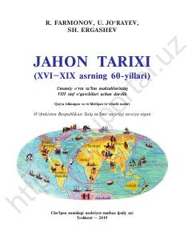

JT8-sinf o‘quvchilari uchun XVI–XIX asrlar jahon tarixi bo‘yicha darslik.
Ushbu darslik umumiy o‘rta ta’lim maktablarining 8-sinf o‘quvchilari uchun mo‘ljallangan bo‘lib, XVI–XIX asrning 60-yillarini o‘z ichiga olgan yangi davr jahon tarixini yoritadi. Kitobda agrar sivilizatsiyadan industrial sivilizatsiyaga o‘tish jarayonlari, kapitalistik munosabatlarning shakllanishi va buyuk tarixiy voqealar bayon etilgan. Mualliflar jamoasi tomonidan tayyorlangan ushbu nashr o‘quvchilarning tarixiy tafakkurini rivojlantirishga xizmat qiladi.